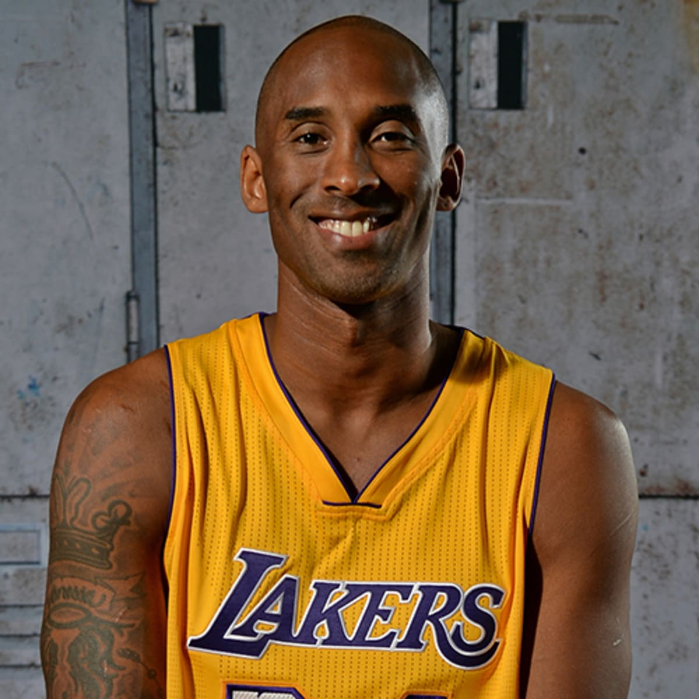

kobe bryant

biography
né le 23 août 1978 à Philadelphie en Pennsylvanie et mort le 26 janvier 2020 à Calabasas en Californie, est un joueur américain de basket-ball. Il évolue dans la franchise NBA des Lakers de Los Angeles pendant vingt saisons, entre 1996 et 2016.
réussie
-
2008 : NBA most valubale player
-
2009,2010,2011 : NBA all-defenive team
-
2011,2012,2013 : all-NBA team
parole
parole
-
i can't relate to lazy people. we don't speack the same language.I don't undrstand you
-
once you know what failure feelslike, determination chases success.
-
the moment you give up is the moment you let semone else win.